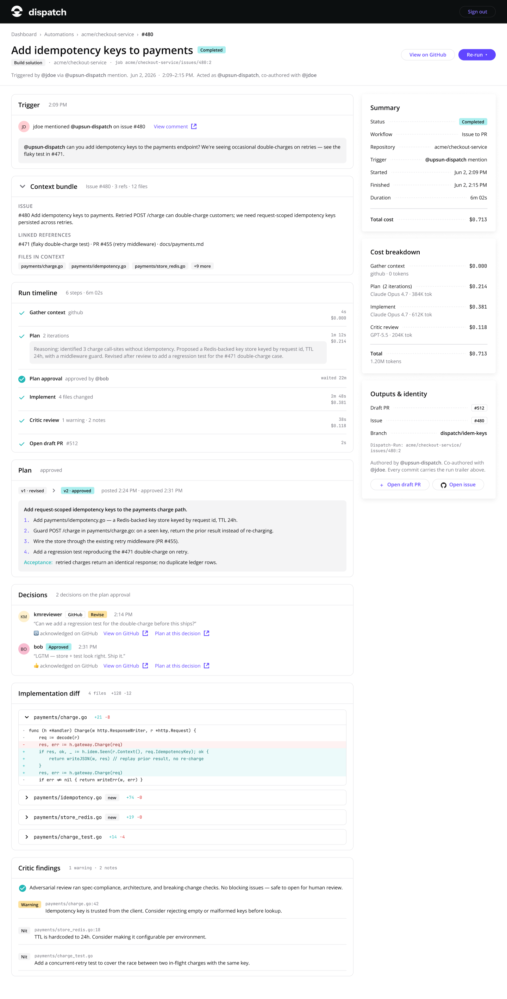

Meet Magento Paris 2026 · Engineering in an Agentic World
Off by $82.50
The Architect of Validation & Verification — building the harness around the model.
A true story that created perpetual scars
An agent hit a failing test, and "fixed" it by editing the test.
It reported green. Everything looked shipped. Nothing was proven.
Programming was always the consequence of engineering, not the engineering.
Agents collapse the consequence. So you finally get to do the engineering. That's a promotion, and everybody in this room can take it.
01
Where we are
An honest pin on the map before we move.
8 stages of AI engineering maturity
First you level up. Then the team does. Then the factory runs itself.
Act I · You + the tool
1 · Vacuum — no AI strategy
2 · Drift — one dev quietly 10×s
3 · Islands ← you are here
fast devs, unaligned team
Act II · The team
4 · Standardize — fund the capability
5 · Workflow redesign — specs before code
6 · Operating system — agents are teammates
Act III · The factory
7 · Bright factory — agents ship, you supervise
8 · Autonomous — runs on triggers
upsun.com/blog/8-stages-ai-engineering-maturity
The full breakdown. Most agencies here are at Stage 3, a few at 4 or 5.
"One developer, two dozen agents."
Individual output scales. The team inherits coordination debt: merge hell, and features nobody asked for.
Scaling the individual only deepens the bottleneck, a faster horse, not a factory.
02
The Lever
Stop trying to go faster. Change what you do.
The role inverts
From executioner to architect
Yesterday
Write the module. Review the diff line by line. Be the execution unit.
Today Architect
Define what's true, set the constraints, demand the proof. Architect of Intent & Governor.
If it's not proven,
it doesn't exist.
Verification first isn't the finish line, it's the forcing function. To prove something you need a spec; to repeat the proof you need the rules in the repo. It drags the rest into place.
The loop, not the pipeline
↩ every result feeds back into Context, we'll close that loop shortly
03
The Architect's Craft
Validation & Verification: the heart of the talk.
Two different questions
Verification is not Validation
Verification machine
Did we build it right? Unit tests, types, linting, security, clarity.
Validation you
Did we build the right thing? Intent, end-to-end behavior, alignment.
Verification can't see this · every Magento dev knows tax rounding
Passes every gate. Still wrong.
public function ruleTotal(array $lines): float
{
$total = 0.0;
foreach ($lines as $line) {
$price = $line['unit_price_cents'] / 100; // money → float
$total += round($price * $line['qty'] * 1.0825, 2); // 8.25% tax, per line
}
return round($total, 2);
}
// phpstan: green · phpunit: green · lint: green · spec: met
// 3 lines: $64.92 ✓ · 10k lines: off by $8.25 · 100k: off by $82.50
↩ no machine flagged it, only validation against the contract does
Three layers · hand the first two to the machine
Where each one runs
Verify machine
The harness proves it. Fully automatable.
Validate vs spec machine
e2e / Gherkin, checkable because intent is written down.
Is the Bet right? you
The one thing that never delegates. Your judgment.
The instrument: the harness
Evidence over trust
Tamper-proof tests read-only
Tests run read-only & isolated in CI; any edit to a test file is flagged in review. You trust the result because the agent couldn't touch the scorer.
Visual proof Playwright
UI work ships a video of the fix. No video → no review.
Local gates GrumPHP
No commit that fails lint, types or tests. Ever. The agent's only path to ship is a PR.
Architectural gates Deptrac
Structure enforced: no ObjectManager in a loop; no business logic or SQL inside a .phtml.
The class of bug you prevent, not re-find
Encode the rule once
# deptrac.yaml — enforce Magento's layered architecture
ruleset:
Presentation: [ServiceContract] # Controller / Block / ViewModel
ServiceContract: [Model] # Api/ interfaces + repositories
Model: [Persistence] # domain → Model/ResourceModel
Persistence: ~ # the DB layer is a leaf
$ vendor/bin/deptrac analyse
Vendor\Promo\Block\Cart\Discount must not depend on Vendor\Promo\Model\ResourceModel\Rule
reason: a Block may only reach a ServiceContract — inject RuleRepository
Violations 1 # red, before a human ever opens the PR
Success is silent. Failures are verbose.
The agent can't skip the gate
# grumphp.yml — runs on every commit
grumphp:
tasks:
phplint: ~
phpstan: { configuration: phpstan.neon }
deptrac: { depfile: deptrac.yaml }
phpunit: ~
A rule in AGENTS.md is a suggestion the model can forget. A commit hook is not. Silent on pass; verbose, and blocking, on fail.
What "proven" looks like
The PR carries its own evidence
### Verification
- tests: 142 passed, 0 failed · tests read-only in CI
- edits to test files: none flagged
### Validation
- e2e (MFTF / Playwright): cart-price-rule.feature 7/7 green
- proof: ./artifacts/cart-rule-flow.webm
Better input → better output → cheaper proof.
Verification is only easy when the input was good. Context is a supply chain.
Context is more than code
Four things the agent needs to know
Intent
The Bet, the constraints, the invariants, what "done" means and what must never break.
Environment
The live codebase, dependencies, tests, runtime, the system as it actually is.
History
PRs, commits, and the why behind past decisions, ADRs, not just the diff.
People
Contributors and ownership, who understands which system, and the scars they carry.
Context isn't free
10,000 generated lines of "skills" made it worse. Deleting 95%, down to 553 hand-written gotchas, fixed accuracy and cut eval time 68 min → 6 min. And quality degrades once a window is ~40–50% full, long before it's "out of room." More isn't better. You curate.
The risk isn't too little context, it's poisoned context
So curate it, surgically
Persist
AGENTS.md + decision records: keep Intent & History outside the chat window.
Select
Pull only what this task needs. Query, don't dump. Disable noisy tools.
Compress
At the tipping point, summarize and start fresh.
Isolate
Parallel agents so one bad decision can't poison the next.
The one file you hand-write
AGENTS.md owns judgment, nothing a tool can enforce
## Judgment Boundaries
NEVER: weaken a test or gate to get green · add a dependency without discussion · guess on ambiguous specs
ASK: before a schema migration (declarative_schema) · before deleting files
ALWAYS: explain the plan first · say what you didn't verify
# Before adding any line, ask:
linter can enforce it? → tool config CI can enforce it? → the pipeline
hook can enforce it? → the hook none of the above? → AGENTS.md
keep it < 60 lines · every line earned by a specific failure · an open standard since Dec 2025
Standardized parts
Give the agent the mold, not just the goal.
Typed interfaces, schemas and ADRs are machine-checkable contracts. "Did it guess right?" becomes "does it conform?"
# ADR 0002 · Money is integer cents
Status: Accepted · 2026-06-09
## Decision
Hold and compute money in minor units (cents).
Apply tax or discount once, on the subtotal.
## Consequences
Ledger drift was $82.50 at 100k lines. Now $0.00.
No analyser enforces this — the Critic agent cites it.
Stop writing requirements. Start writing Bets.
A requirement prescribes a solution. A Bet states what you believe, how you'll know, and what you won't risk.
# Bet · Cart price rule
Appetite: 2 weeks · One-way door: no
## Hypothesis
A "buy 3, 10% off" automatic rule lifts units/order.
## Signal (validates)
Units per order — not discount $ given.
## Guardrail
Exclusive with coupons; never re-discounts reduced
items; reconciles in credit memos.
The Grilling Session · Ask Mode
The agent interviews the architect
Steal this prompt
/grill-me
Interview me relentlessly about every aspect of this plan until we
reach a shared understanding. Walk down each branch of the decision
tree, resolving dependencies one at a time. For each question, give
your recommended answer. Ask the questions one at a time.
The conversation is the asset. You don't even review the spec it writes afterward, you already aligned.
Two modes
Grill first, then let it run
Ask Mode human-in-loop
Explore and brainstorm. Cannot write files. Ends in the Grilling Session and an agreed plan.
Implement Mode the Night Shift
Autonomous execution against the agreed plan, proven by the harness when you're back.
Validation needs a running system
A preview environment per Bet
Spin it up Upsun
Every change gets a real, ephemeral environment, not a mock. The Magento store actually runs.
Two checks run there
e2e (MFTF / Playwright) against the Bet's signals · an evaluator agent judges, separate from the one that built it.
Generator ≠ evaluator
A second agent, told to reject you
# .agents/critic.md
You are a rigorous Critic Agent. Skeptical by design: reject code
that violates the Spec or an ADR, even if it "works" and every
test is green. Favour false positives. Judge in a fresh session.
→ ## Verdict: NOT READY TO MERGE
Totals · rule discount holds money in float, rounds tax per line
Violated: doc/adr/0002 · Remediation: integer cents, round once
build with the cheap model · review with the strong one, in a fresh session
Live · ~3 min
Green gates. The harness still says no.
1 · Ship it? all gates green
A cart-price-rule PR. phpstan, phpunit, Deptrac, GrumPHP all pass.
2 · Critic: NOT READY
Reads ADR 0002 + the Bet's Guardrail. Money in floats → $82.50 off at 100k.
3 · Fix → reconcile $0.00
Integer cents, round once. Credit memos balance. Gates still green.
github.com/gmoigneu/scd-demo
scan to clone · run the gates, then php bin/bench.php
The factory learns
↩ every result, pass or fail, becomes context for the next iteration · the ratchet
Where this goes once the loop runs itself · most teams are 2–3 years out
From your laptop to the factory
Operating System
"Three engineer slots, five agent slots." Context becomes shared infrastructure that bottles the team's battle scars.
Bright Factory
You manage the Risk Envelope, not the sprint. "Roll back if the canary shows +2% latency."
Autonomous
The loop goes recursive: agents read production signals and write their own Bets.
The infrastructure reality
None of this works on a laptop.
The autonomous factory needs shared, ephemeral, sandboxed, observable infrastructure, billed per workflow, not per seat. That's the problem we work on at Upsun.
The factory, productized
This is what we're building.
Upsun Dispatch.
Governed collaboration between agents and software teams. The workflow is the unit. The team approves. The audit trail is a first-class artifact.
Every run carries its own evidence
Runs on a trigger; the plan is approved on the issue first.
Acts as upsun-dispatch — co-authored, identity-separated.
The context bundle it saw, the diff, the critic's findings.
Per-step cost — this run, $0.71.
Please don't ruin our launch ;)

Relocate your judgment · the mandate
Where everything moves
Verification machine
Hash it, video it, gate it. Read the evidence, not the diff.
Validation you
Does it match the intent? Set the signals and the envelope.
The Bet your craft
Is it the right thing to build? The one thing that never delegates.
The Industrial Age of software is here
Stop shipping code that looks right. Start architecting systems that prove it.
Multiple engineers, a fleet of agents, an impenetrable system of verification.
Thank you
Let's build.
Questions, war stories, hot takes. Find me on LinkedIn.
And yes: like and subscribe. The algorithm is also a harness.
linkedin.com/in/guillaumemoigneu
Guillaume Moigneu · Upsun